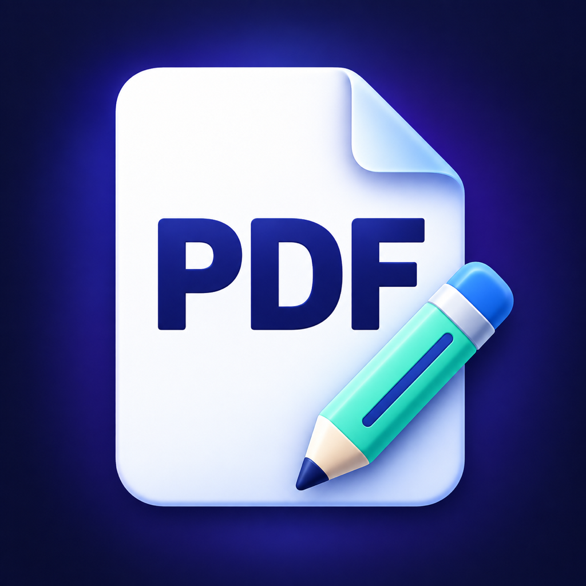

홈 · 빠른 시작
사진→PDF, 문서→PDF, 서명·주석 등 자주 쓰는 기능으로 바로 이동합니다.

Total PDF문서 스캔부터 편집·서명·암호 관리까지.
기존 ‘PDF 암호제거’ 앱이 Total PDF로 확장되었습니다.
현재 앱 기능 기준 안내 · 실제 사용 중인 버전에 따라 메뉴가 다를 수 있습니다.
사진→PDF, 문서→PDF, 서명·주석 등 자주 쓰는 기능으로 바로 이동합니다.
카메라로 종이 문서를 스캔하거나 사진을 선택합니다. 순서·용지·여백을 조절하고, 글자 인식으로 검색 가능한 PDF를 만들 수 있습니다.
PDF 페이지를 선택하고 순서·회전·삭제를 조정하거나 여러 문서를 하나로 합칩니다. 도구에서는 페이지 추출·분할도 가능합니다.
하나의 메뉴에서 암호 제거와 암호 걸기를 선택합니다. 암호 제거는 알고 있는 암호로 문서를 열어 암호 없는 사본을 만드는 기능입니다.
색상을 고르고 두 손가락으로 확대해 원하는 위치에 주석을 추가합니다. 실행 취소·다시 실행도 지원합니다.
기존 PDF 글자 인식(OCR), 압축, 문서 비교, 워터마크·페이지 번호, 검색·미리보기를 기능별로 선택합니다. 워터마크는 크기·위치·각도·적용 페이지를 조정할 수 있습니다.
파일 앱에서 문서를 선택해 PDF로 만듭니다. A4/Letter, 가로 방향, 여백을 설정할 수 있습니다.
TXT는 UTF-8 또는 BOM이 있는 UTF-16을 지원합니다. RTF는 텍스트 중심이며 첨부 개체가 있으면 원본 앱에서 PDF로 내보내야 합니다. 변환 후 미리보기를 확인하세요.
현재 Total PDF에서 직접 자동 변환하지 않습니다. DOC/DOCX, XLS/XLSX, PPT/PPTX, HWP/HWPX 파일을 선택하고 호환 앱에서 열 수 있습니다.
호환 앱이 필요하며 지원 형식·메뉴·비용은 해당 앱에 따라 다릅니다. 원본 미리보기도 기기가 지원하는 형식에 한해 제공됩니다.
구독이 아닙니다. 가격은 앱 내 구매 화면에서 확인하세요.
무료로 만들거나 편집한 PDF도 결과를 저장·공유하려면 Pro가 필요합니다. 구매는 기존 Apple 계정으로 복원할 수 있습니다.
처리 중에는 진행 표시가 나타납니다. 완료 후 하단 안내의 결과 보기 버튼을 누르거나 아래 처리 결과 영역을 확인하세요. 진행 중인 작업은 취소할 수 있습니다.
같은 도구 작업 화면에서는 ‘이전 작업 결과’에서 다시 미리보기·저장·이어서 작업을 할 수 있습니다. 영구 보관함은 아니므로 화면을 닫거나 앱을 종료하기 전에 필요한 결과를 저장하세요.
아니요. 암호를 추측하거나 복구하는 기능은 없습니다. 암호를 알고 있고 처리할 권한이 있는 문서에 사용해 주세요.
카메라를 지원하는 기기에서 카메라 권한을 허용해 주세요. 사진 저장에는 사진 추가 권한이 필요합니다. iPhone/iPad 설정에서 Total PDF의 권한을 확인할 수 있습니다. 사진 선택은 시스템 사진 선택기에서 직접 고른 항목만 가져옵니다.
OCR 정확도는 원본의 해상도와 글자 상태에 따라 달라집니다. 이미 최적화된 PDF는 더 작아지지 않을 수 있습니다. OCR 사본은 일부 주석·문서 구조가 달라질 수 있으므로 원본과 결과를 미리보기로 비교하고 원본을 보관하세요.
구매한 Apple 계정으로 로그인하고, 앱의 Pro 화면에서 ‘구매 복원’을 선택하세요. 네트워크 연결도 확인해 주세요. 계속 문제가 있으면 오류 문구와 앱·iOS 버전을 보내 주세요.
Total PDF의 변환·편집·OCR은 기기 안에서 처리하며 문서나 암호를 자체 서버로 업로드하지 않습니다. 사용자가 공유·클라우드 저장·다른 앱에서 열기를 선택하면 파일이 선택한 앱이나 서비스로 전달되며 해당 서비스 정책이 적용됩니다.
작업용 임시 파일은 다음 실행 시 정리되며 시스템이 먼저 삭제할 수도 있습니다. 공유 확장 결과는 앱에서 공유 결과를 지울 때까지 보관됩니다. 필요한 PDF는 파일 앱 등 원하는 위치에 저장해 주세요.
오류 내용, 앱 버전, iOS/iPadOS 버전, 사용한 기능과 파일 형식을 알려 주세요. 화면을 첨부할 때는 개인정보를 가려 주세요. 문서 원본이나 암호를 보내지 않아도 됩니다.
보통 2~3일 안에 답변드립니다.
Scan, edit, sign and manage PDF passwords.
Previously known as PDF Unlock.
This guide covers the current app features. Menus may differ in your installed version.
Jump to Photos to PDF, Document to PDF, signatures and annotations, and other frequently used tools.
Scan paper documents or select photos. Adjust their order, paper size and margins, and add text recognition to create searchable PDFs.
Select, reorder, rotate or delete pages, or combine documents. The tools library also offers page extraction and splitting.
Remove or add passwords from one menu. Password removal opens a document with a password you know and creates an unprotected copy.
Choose colors and zoom with two fingers to place annotations precisely. Undo and redo are also available.
Choose OCR for existing PDFs, compression, comparison, watermarks, page numbers, search or preview. Customize watermark size, position, angle and target pages.
Select a document from Files and create a PDF with A4/Letter paper, landscape orientation and adjustable margins.
TXT supports UTF-8 or UTF-16 with a BOM. RTF conversion is text-focused; files with embedded objects must be exported from their original app. Review the converted PDF before saving.
Total PDF does not currently convert these formats directly. You can select DOC/DOCX, XLS/XLSX, PPT/PPTX or HWP/HWPX files and open them in a compatible app.
A compatible app is required. Formats, menus and charges depend on that app. Original-file previews are only available for formats supported by your device.
Not a subscription. See the in-app purchase screen for pricing.
Saving or sharing a PDF requires Pro even when creating or editing it is free. Restore your purchase using the same Apple Account.
A progress indicator appears during processing. When complete, use the result button in the bottom status banner or scroll to the results section. You can cancel active processing.
Within the same tool session, Previous Results lets you preview, save or continue working with earlier outputs. This is not a permanent library: save any results you need before closing the screen or app.
No. The app does not guess or recover passwords. Use it for documents whose password you know and that you are authorized to process.
Scanning requires a supported camera and camera permission. Saving images requires add-only Photos permission. Check Total PDF permissions in iPhone/iPad Settings. Photo selection uses the system picker and only imports items you choose.
OCR accuracy depends on image quality and text clarity. Already optimized PDFs may not become smaller. OCR copies may change annotations or document structure. Compare the result with the original and keep your original file.
Sign in with the Apple Account used for purchase and choose Restore Purchases on the Pro screen. Check your network connection. If the issue persists, send us the error message and your app and iOS versions.
Total PDF converts, edits and recognizes text on your device and does not upload documents or passwords to its own servers. If you choose sharing, cloud storage or opening in another app, files are passed to the selected app or service and its policies apply.
Temporary working files are cleared on the next app launch and may be removed earlier by the system. Share-extension results remain until you clear shared results in the app. Save important PDFs to Files or another location you control.
Include the error message, app version, iOS/iPadOS version, feature and file format involved. Hide personal information in screenshots. You do not need to send original documents or passwords.
We usually reply within 2–3 days.